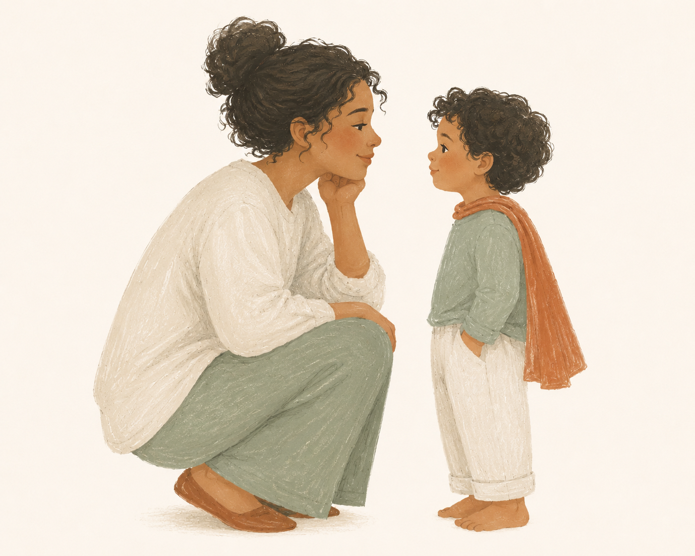

A Gentle Parenting Guide To
Stronger Connections • Calmer Moments • Confident Kids
Simple Words. Powerful Connections.

Most of these phrases are automatic. You say them because they're familiar — often because you heard them growing up. In a hard moment, your brain reaches for what it knows. That's not a flaw. That's just how habits work.
This guide doesn't ask you to parent differently. It just gives you a better option ready — so when the moment comes, you're not searching for words.
Pick one phrase. Practice it until it sounds like you. Then come back for another.
You will still say the wrong thing. Every parent does. What matters is the repair — a simple "I could have handled that better" is enough.
What to say when the moment hits
© Parent Field Guide. All rights reserved.
Nº 02 in The Calm Parenting Series